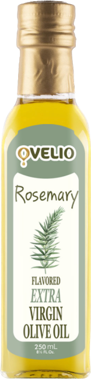
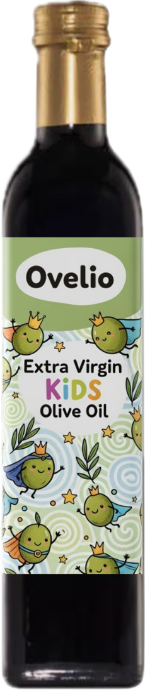
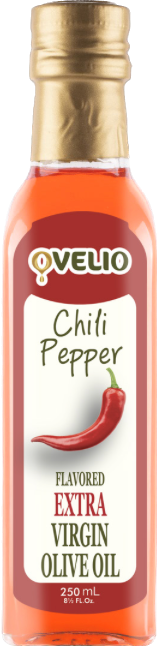
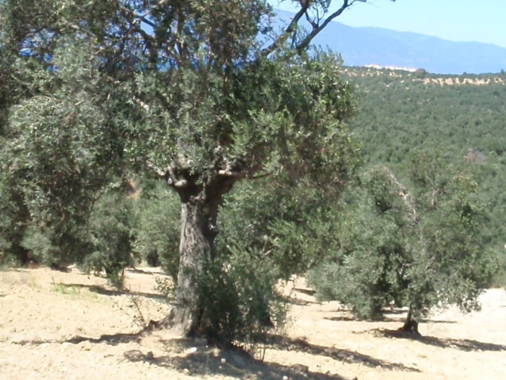
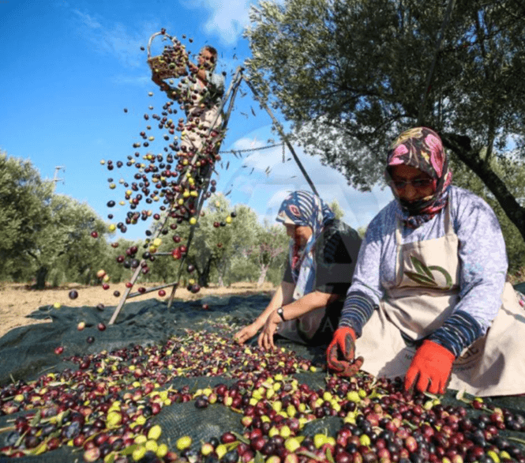

OVE Foods
OVE Foods, Aydın, Ege çıkışlı bir zeytinyağını natürel sızma ve organik çizgisinde sunar. Sofraya ulaşan her şişede temiz, karakterli ve hatırlanır bir tat bırakmayı hedefler.
Şişe ve Ürün Görselleri



OVE Foods Hakkında
OVE Foods hikayesi
OVE Foods daha seçici sofralara yakışacak karakterli bir çizgi sunar. Aydın, Ege çıkışlı bu yağı natürel sızma ve organik çizgisinde hazırlar; şişe sofraya ulaştığında yalnızca lezzet değil güven de taşır.

OVE Foods bu işi aile içinde öğrenilmiş bir dikkatle sürdürür. Kuşaktan kuşağa taşınan bilgi sayesinde yalnızca yağ üretilmez; sofraya güvenle koyulabilecek bir lezzet aynı titizlikle korunur.
Hakkımızda sayfasından öne çıkanlar
Ove Foods' source of richness begins with the olives we harvest. Mainly from mountains and high ridges, these olives—entirely free from air pollution—are hand-picked and pressed within 24 hours to become oil. This is where our journey of quality begins.

From a family olive oil business established in Turkey in 1948 to a global premium food brand, discover three generations of passion and tradition behind OVE Foods.
In 1948, our Grandfather founded the family's olive oil business by establishing storing and filling facilities in Turkey. Starting as a local operation, the company grew steadily and became the largest olive oil vendor in the local market. This marked the beginning of what would become a multi-generational commitment to quality olive oil production and distribution.
Lezzet ve üretim çizgisi
OVE Foods, Aydın, Ege tarafının karakterini olduğu gibi taşımaya çalışır. Şişede görülen lezzetin kökü, bu coğrafyanın ikliminde, toprağında ve zeytin ağacının yıl boyunca biriktirdiği dengede yatar.
OVE Foods tarafında lezzet anlatılırken önce damakta bıraktığı iz öne çıkar. Bu yağda çiğ kullanımda kendini hemen belli eden temiz bir akış ve içeriğe bakanların aradığı daha güven veren bir sadelik öne çıkar. İyi zeytinyağı anlayışında, şişe açıldığında temiz koku vermesi ve sofrada nerede duracağını hemen belli etmesi beklenir. Bu nedenle kahvaltıda ekmeğe gezdirdiğinizde, salatada son dokunuşu yaptığınızda ya da zeytinyağlı bir yemekte temel lezzeti kurduğunuzda farklı biçimde karşılık verir.
Ayrışan taraf, kalite tarafında teknik disiplinin görünür tutulması ve yerelde doğup daha geniş sofralara açılırken karakterin korunması. Bu yüzden iyi bir ilk izlenim vermekle yetinmez; şişe açıldığında da aynı sözü sürdürür.
Bu yağı ilk kez deneyecekseniz natürel sızma, erken hasat ve varsa yüksek polifenol gibi ifadelerin hangi seride toplandığına bakmak gerekir. Teneke seçenekleri bu yüzden önemli. İlk denemede küçük hacim güven verir; beğendiğiniz çizgiyi bulduğunuzda daha büyük ambalajlar evdeki düzenli kullanım için çok daha doğru olur. Yoğun aromayı kahvaltıda ve çiğ dokunuşlarda arıyorsanız daha karakterli şişelere, gün boyu mutfakta rahat kullanmak istiyorsanız daha yumuşak akış veren serilere yönelmeniz daha doğru olur.
Sofrada kullanım ve seçim
OVE Foods, yerelden doğup farklı sofralara ulaşsa da asıl ölçüyü geldiği toprağın karakterini kaybetmemekte bulur. OVE Foods alındığında yalnızca bir yağ değil; emeği belli olan, nereden geldiği hissedilen ve hangi sofrada parlayacağını bilen bir seçim gelir. Şişe açıldığında beklenti ne olursa olsun amaç aynıdır: kokusuyla, akışıyla ve damakta kalan iziyle bu yağı tekrar hatırlatmak.
İyi zeytinyağı anlayışında yalnızca rengi güzel görünen bir yağ aranmaz; kokusu açıldığında canlı olmalı, damakta temiz akmalı ve sofradaki diğer tatların üzerine çıkmadan kendini belli etmelidir.
Şişeyi açtığınızda önce gelen koku, sonra dilde bıraktığı akış ve en son boğazdaki kısa iz iyi bir şişede en çok dikkat edilen ayrıntılardır. Bu üçü bir araya geldiğinde yağ kendini gerçekten anlatır.
İster kahvaltı sofrasında ekmeğe gezdirin ister salatada son dokunuş olarak kullanın, iyi bir şişe her kullanımda aynı güveni vermelidir. Güven duygusunu kalıcı kılan şey tam olarak bu tutarlılıktır.
Bölgeler ve Kategoriler
İletişim Bilgileri
- 284 Str. No:2, Gate No:112